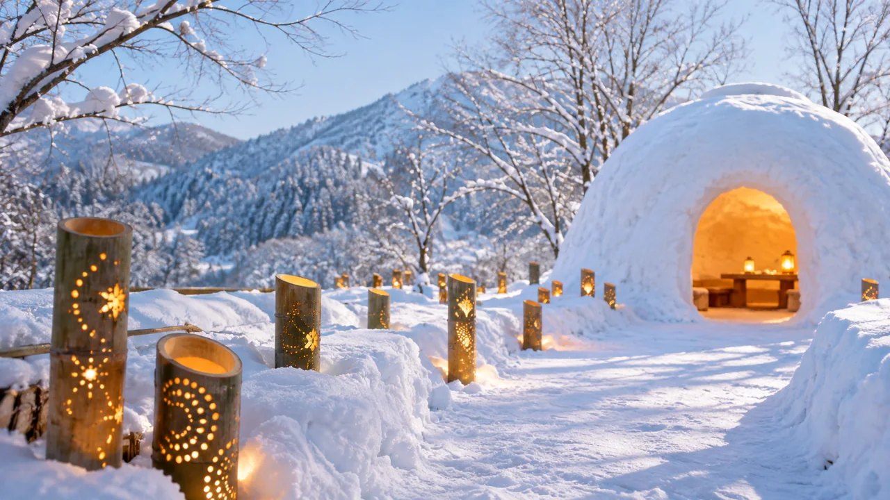
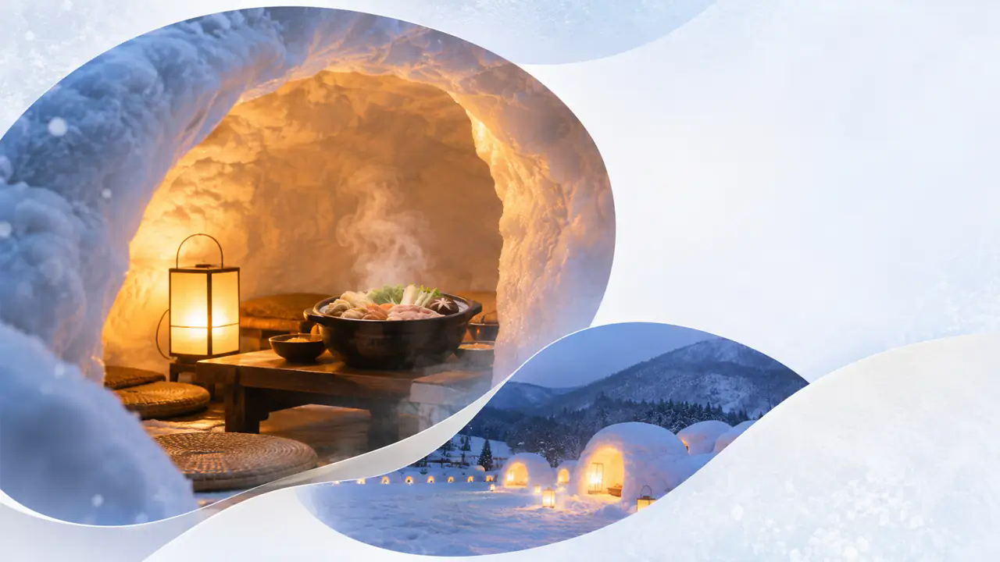
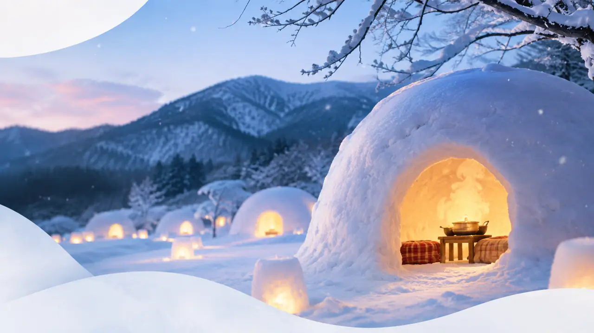
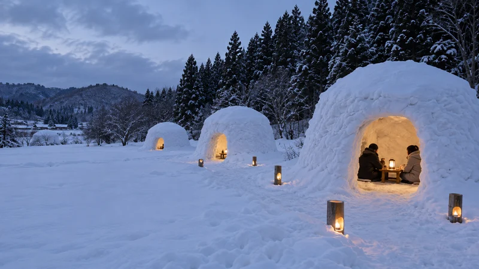

DAY EXPERIENCE
かまくらの時間利用Snow hut dining
雪のかまくらを1棟利用し、みんなで鍋を囲むお昼のプラン。Reserve one snow hut for a hot pot lunch with family or friends.
- 利用時間Duration
- 75分75 minutes
- 定員Capacity
- 1棟6名まで／各回5棟Up to 6 per hut / 5 huts per session

AIZU SANSON RESORT · WINTER 2027
南会津の雪景色の中で楽しむ、75分のかまくら体験。会場には竹ランタンの灯りもともります。A 75-minute snow hut dining experience in snowy Minamiaizu, with bamboo lanterns lighting up the festival grounds.
2027年1月23日〜2月23日 開催予定Tentatively Jan 23 – Feb 23, 2027
かまくら体験とコテージA棟の宿泊は、別々のお申し込みです。Snow hut visits and Cottage A accommodation are booked separately.
DAY EXPERIENCE
雪のかまくらを1棟利用し、みんなで鍋を囲むお昼のプラン。Reserve one snow hut for a hot pot lunch with family or friends.

STAY AT THE RESORT
かまくら体験の前後も南会津でゆっくり。キッチン・浴室付きのコテージA棟をご案内します。Spend a night in Minamiaizu before or after your visit. Cottage A has a kitchen and bathroom.


※写真はイメージです。*Illustrative image.
雪でつくられたかまくらの中には、みんなで鍋を囲む食卓をご用意。外の雪景色を楽しみながら、温かい料理をゆっくり味わえます。Inside the snow hut, gather at a table for a warming hot pot meal. Enjoy lunch with family and friends against the snowy backdrop.
南会津の冬を、かまくらで。A winter day in Minamiaizu.
海外からお越しの方向けFor guests visiting from overseas
すき焼き鍋を楽しむプランA sukiyaki hot pot meal
水炊きを楽しむプランA mizutaki chicken hot pot meal
1回の予約でかまくら1棟（最大6名）をご利用いただけます。料金はすべて税込、Web予約・クレジットカード事前決済の場合の価格です。原則2名様から。大人1名の場合はシングル料金が適用されます。未就学児は無料（お椀と箸のみ・食事なし）です。One booking reserves one snow hut for up to six people. All rates include tax and apply to online reservations with advance credit card payment. Generally for two or more guests; a solo adult rate applies. Preschool children are free (bowl and chopsticks only, no meal).
各回75分、1組につきかまくら1棟をご利用いただけます。各時間帯5棟、1棟につき最大6名まで。Each session lasts 75 minutes. One booking reserves one snow hut for up to six guests. Five huts are available per time slot.

かまくらの中で鍋を囲んで、食後は外の雪景色も。冬の南会津で、少し特別なお昼を。Enjoy hot pot inside the snow hut, then step outside to take in the winter scenery.
雪道に並ぶ竹ランタン。日が暮れると、雪の白さにやさしい灯りが浮かびます。After dusk, bamboo lanterns cast a warm glow across the snowy festival grounds.
※写真・映像はイメージです。点灯時間は未定です。昼の鍋プランで点灯をご覧いただけるとは限りません。*Illustrative images. Lighting times are to be confirmed and may not overlap with daytime meals.AIZU SANSON RESORT
かまくら体験のあとも南会津に滞在したい方へ。コテージA棟はキッチン・お風呂付き。ご家族やグループで、雪国の夜をお過ごしいただけます。Want to stay overnight? Cottage A offers a kitchen, bathroom and room for families or groups.
予約先にはほかのコテージも掲載されています。A棟のお部屋をお選びください。宿泊料金・キャンセル条件は宿泊予約サイトをご確認ください。The accommodation site also lists other cottages. Please select a Cottage A room. Rates and cancellation rules follow the accommodation booking website.
会津鉄道「会津山村道場駅」から徒歩約14分。お車の場合は冬用タイヤ等を装備し、道路状況をご確認ください。Approx. 14 minutes on foot from Aizu-Sanson-Dojo Station. If driving, please use suitable winter tires and check road conditions.
Google マップで見るView on Google Maps
かまくらと宿泊は別々の予約になります。ご希望の方からお進みください。Snow hut visits and cottage stays require separate bookings.
鍋付き75分。お好きな時間とプランを選ぶ予約です。A 75-minute hot pot experience. Choose your session and meal plan.
1棟最大6名・各回5棟6 per hut · 5 huts per session宿泊日と人数からお部屋を選ぶ予約です。Choose your room by check-in date and number of guests.
A棟1／A棟2・1泊からCottage A1 / A2 · Overnight1棟につき最大6名です。原則2名様からご利用いただけますが、大人1名での利用も可能です（シングル料金適用）。各時間帯の予約枠は5棟です。Each snow hut accommodates up to six guests, with five huts available per time slot. Bookings are generally for two or more people; a solo adult can book at the single-person rate.
無料です。お椀と箸のみをご用意し、食事は付きません。Preschool children are free. A bowl and chopsticks are provided, but no meal is included.
このページでは「かまくら利用＋鍋」のセットプランをご案内しています。食事なしの利用については別途お問い合わせください。The plans shown here include both a snow hut and a hot pot meal. Please contact us about visiting without a meal.
インバウンドプランと国内プラン01は「鍋・すき焼き」、国内プラン02は「水炊き」です。詳しい具材やアレルギー対応は、内容が確定次第ご案内します。Inbound Plan and Domestic Plan 01 feature hot pot and sukiyaki; Domestic Plan 02 features mizutaki. Full ingredients and allergy information will be shared once confirmed.
かまくら体験の専用予約ページは準備中です。コテージA棟の宿泊は、会津山村リゾートの宿泊予約サイトからご予約いただけます。The snow hut booking site is being prepared. Cottage A rooms can be booked through the resort’s accommodation site.
点灯時刻は未定です。昼の鍋プランの時間帯にランタンが点灯していることは保証できません。Lantern lighting times are not yet fixed, so illumination during the daytime hot pot sessions is not guaranteed.
かまくら体験の予約確定後はキャンセルを受け付けません。コテージA棟の宿泊は、宿泊予約サイトに記載されたキャンセル条件をご確認ください。Confirmed snow hut bookings cannot be cancelled. Cottage A stays follow the cancellation policy shown on the separate accommodation website.